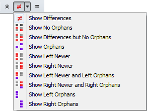

Les filtres d'affichage limitent la visualisation à certains résultats de comparaison. Par exemple, vous pouvez sélectionner Afficher les différences  pour cacher tous les fichiers correspondants pour ainsi pouvoir vous concentrer sur les non-correspondances. Le choix en cours du filtre d'affichage sera sauvegardé lorsque vous quittez une session, sauf si cette session est verrouillée.
pour cacher tous les fichiers correspondants pour ainsi pouvoir vous concentrer sur les non-correspondances. Le choix en cours du filtre d'affichage sera sauvegardé lorsque vous quittez une session, sauf si cette session est verrouillée.
La plupart de types de session ont plusieurs types d'implémentation de filtre d'affichage. Les exemples ci-dessous sont repris d'une session de Comparaison de Dossiers.
Cliquez avec le bouton droit sur la barre d'outils pour sélectionner une des trois façons prédéfinies pour afficher les filtres d'affichage sur la barre d'outils : Liste déroulante, Favoris or Bascules. Ou choisissez Options de barre d'outils pour créer votre propre disposition personnalisée.
Disposition Liste déroulante
Liste déroulante est le style par défaut pour la barre d'outils, créée pour la simplicité et pour épargner de la place sur la barre d'outils.

Les boutons représentent Afficher tout  , Afficher les différences
, Afficher les différences  et Afficher les identiques
et Afficher les identiques  . La liste déroulante sur le bouton du milieu vous permet de sélectionner une combinaison différente de filtre d'affichage.
. La liste déroulante sur le bouton du milieu vous permet de sélectionner une combinaison différente de filtre d'affichage.
Disposition Favoris
Le style Favoris inclut des combinaisons variées de filtre sur la barre d'outils.

Disposition Bascules
Les Bascules représentent des états individuels de comparaison.

Sélectionnez ce mode lorsque vous souhaitez des combinaisons qui ne sont pas disponibles avec les autres filtres d'affichage. Par exemple, les Bascules montrées ci-dessus afficheront les Orphelins de gauche et les Plus récents de droite, et rien d'autre.